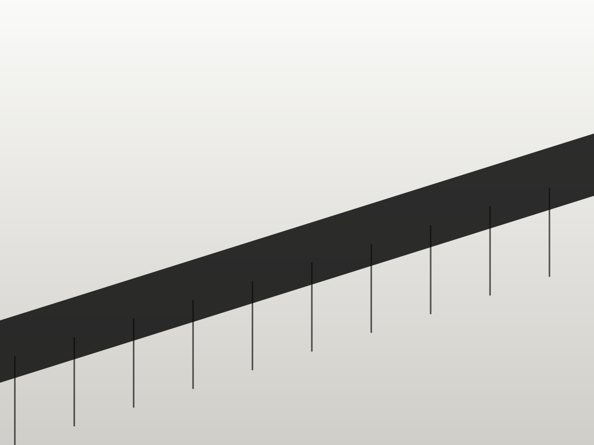

04 · PrecedentCivil works
Civil works
we have delivered.
Three recent examples, each with a full case study.

Pelindo Conveyor
Length1.4 kmKarawang Access Roads
Length3.2 km“They drove 380 piles inside a working port and we never lost a berth day. That is the whole review.”